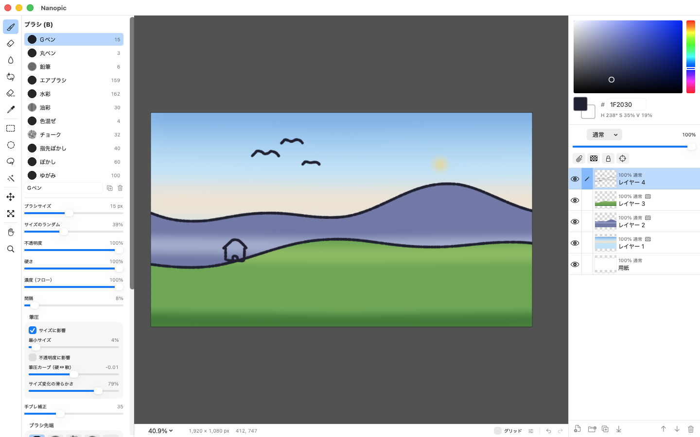

登録なし。
メールアドレスも、パスワードもいりません。
ダウンロードして、開くだけ。
インターネットにもつながりません。
A little paint app for iPad and Mac.
アカウント登録も、ライセンス認証もいりません。
必要な道具だけをそろえた、iPad と Mac のための小さなペイントアプリ。
無料。iPad と Mac で使えます。
iPadOS 17 以降 · macOS 14 以降 · 表示言語: 日本語・英語

メールアドレスも、パスワードもいりません。
ダウンロードして、開くだけ。
インターネットにもつながりません。
ライセンスキーも、起動のたびの確認もなし。
オフラインの机でも、
いつでもそのまま開けます。
筆圧の効くブラシ、レイヤー、選択範囲、PSD。
描くのに要るものだけを、
ひとつの画面に。

無料。iPad と Mac で使えます。
iPadOS 17 以降 · macOS 14 以降 · 表示言語: 日本語・英語ソースからビルドする